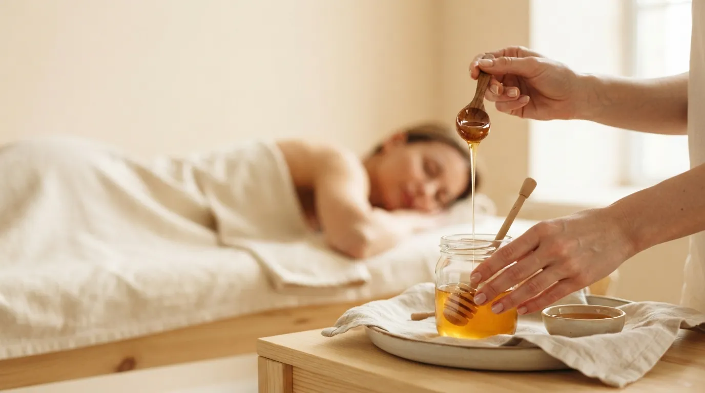

Массаж тела · Прага 4
Медовый массаж в Праге
Массаж натуральным мёдом, который очищает кожу и активизирует обмен веществ. После процедуры кожа становится более гладкой, мягкой и свежей.
Что такое медовый массаж
Медовый массаж - традиционная техника, при которой на кожу наносится натуральный мёд. Ладони прилипают к мёду и отрываются с усилием - это усиливает кровообращение в тканях и запускает обмен веществ.
Одновременно мёд мягко очищает и питает кожу. Чаще всего массаж делают на спине и на зонах, где хочется сделать кожу более упругой и гладкой. Он интенсивнее классического массажа, но оставляет кожу гладкой и свежей.
Как проходит процедура
- Подготовка Слегка подогреваю мёд, чтобы он был жидким и приятным для кожи.
- Разогрев Коротким ручным массажем разогреваю зону и готовлю её к работе с мёдом.
- Массаж мёдом Наношу мёд и ритмично прижимаю и отрываю ладони. Интенсивность подбираю под вашу чувствительность.
- Очищение и успокоение Остатки мёда снимаю тёплым полотенцем и успокаиваю кожу.
Эффект медового массажа
- более чистая и гладкая кожа
- активизация обмена веществ
- улучшение кровообращения в тканях
- мягкая и свежая кожа
- ощущение лёгкости в теле
- хорошее дополнение к антицеллюлитному уходу
Кому подходит
Медовый массаж подойдёт, если хочется очистить, смягчить и освежить кожу, или как часть ухода за проблемными зонами. Он интенсивнее, поэтому я рекомендую его тем, кому комфортны более сильные ощущения во время массажа.
Когда массаж не проводится
- аллергия на мёд или продукты пчеловодства
- расширенные сосуды или варикоз в зоне массажа
- повреждённая, раздражённая или воспалённая кожа
- беременность
- высокая температура и острые заболевания
Сомневаетесь? Позвоните мне до записи по номеру +420 721 761 411, и мы всё обсудим.
Цена медового массажа
Частые вопросы
Больно ли это?
Массаж интенсивнее классического - отрыв ладоней хорошо ощущается. Силу я всегда подбираю под вас, и её можно изменить в любой момент.
Останется ли мёд на теле?
Нет. После массажа я снимаю мёд тёплым полотенцем. Вечером рекомендую принять душ.
Может ли кожа покраснеть?
Да, кратковременное покраснение - это нормально и говорит о приливе крови. Обычно оно проходит за несколько часов.
Как часто повторять массаж?
Для более заметного эффекта хорошо работает курс из нескольких процедур с интервалом в несколько дней. План составим вместе.
Запишитесь на медовый массаж
Студия находится в Праге 4 - Нусле, недалеко от Панкраца и Вышеграда. Запись онлайн займёт минуту.
Другие массажи тела
Как нас найти
Děkanská vinice I 819/16, 140 00 Praha 4 - Nusle
Часы работы: Вт, Чт, Пт 9:00-20:00 · Сб 10:00-17:00